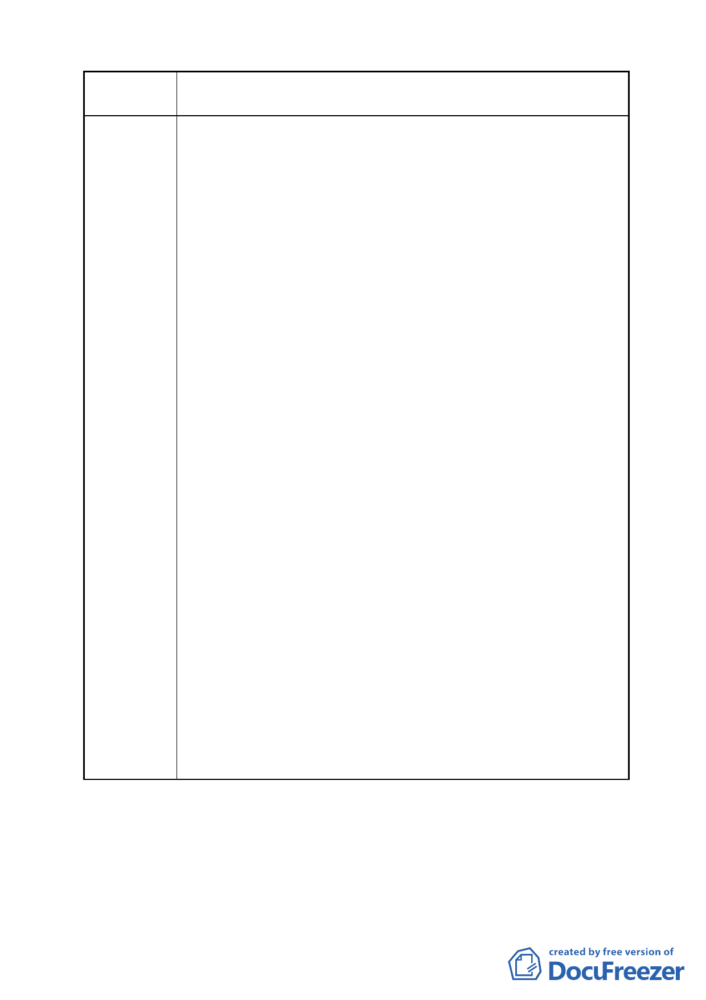

案名
變更臺北市南港區鐵路地下化沿線土地主要計畫案
2.本公司位於南港區南港段二小段 578-1、580、581、583、584、
585、585-1 及 585-3 等地號土地，共約 20,754 平方公尺，現
出租予僑泰興麵粉廠作麵粉工廠、倉庫及宿舍等使用，目前
仍在正常生產營運之中。
本基地為本企業之發源地，為紀念本公司創辦人林國長先生
（泰國華僑、僑泰興麵粉廠、中泰賓館及中華體育館創辦人）
緬懷其對台灣經濟發展之貢獻，本著僑外投資的使命，並非
以營利為單一目標，計劃在祖先留下來的基地上創造一處具
有高品質的空間，成為南港的地標，期能成為南港都市再發
展的典範。
3.因 98 年 3 月 31 日「變更台北市南港區鐵路地下化沿線土地
主要計劃案」修正計劃的內容，條件不佳，缺少開發誘因，
重劃之後基地規模、建築面積、開挖面積及設計的自由度反
而不如未重劃的基地，無法達成本公司對於本基地的使命與
期待，以致本公司不完全贊同公辦重劃之內容；為維護自身
的權益，故提出以工二使用分區的方案提送都市計劃審議作
為並行的議案。
4.經 98 年 5 月 20 日都市設計及土地使用開發許可審議幹事會
議的審議，主席裁示須先釐清是否加入重劃的前提，才能針
對工二的方案繼續審議，並建議與都發局繼續協商公辦重劃
的內容。
5.因此本公司提送主要計劃意見表，對於重劃後基地的設計自
由度與基地的完整性，提出建議辦法建請 貴局予以回應，
以利於本公司是否參加公辦重劃之決策。
- 18 -